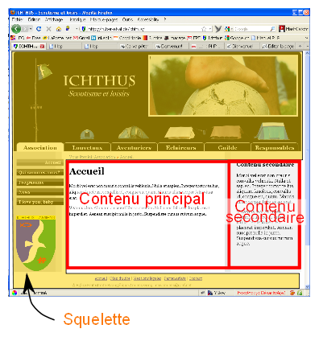
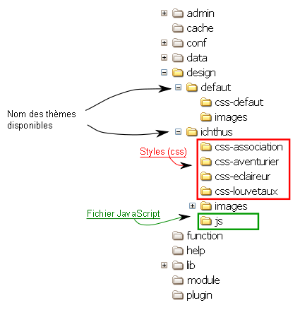

Considérant une page internet, on peut la décomposer en deux parties :
 Cette classification repose certe sur le design (cf. l'image au-dessus) mais ce qui est clair est qu'il y a une partie constante (le squelette) tout au long des pages du site et une autre (le contenu) qui est propre à chaque page.
Le design respecte aussi cette classification. Il y a un gabarit (fichier .html) squelette ainsi qu'un gabarit lié
au type de page (module - ça peut être une page simple, un article d'une collection d'article, une gallerie d'image, un quiz etc.).
Il peut exister différents thèmes. Un thème correspond à :
.css)En changeant de thème, vous changez les fichiers .html, ce qui signifie que vous changez de structure (autre organisation des
données) mais aussi d'information (selon si des balises "{}" ont été ajouté ou supprimé).
En changeant de style, vous changez les fichiers .css, ce qui signifie que la structure et l'information reste la même mais que vous
changer la taille, les couleurs, la police d'écriture, les fonds d'image, l'alignement etc.
L'image ci-dessous présente l'organisation des dossiers. Le dossier defaut ne devrait jamais être supprimé, c'est le thème par défaut.
Dans le dossier de chaque thème devrait se trouver :
squelette.html correspondant au squelette du site (l'entête, le menu, le
pied de page)..html correspondant aux gabarits des modules (exemple: page.html le gabarit du module
page ; article.html le gabarit du module article affichant l'article ; article-index.html le garbarit du module article
affichant l'index des articles etc.).css-.images contenant toutes les images liées au design.js au besoin contenant des codes JavaScript liés design.